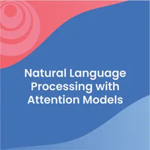

Question Answering
My notes for Week 3 of the Natural Language Processing with Attention Labels Course in the Natural Language Processing Specialization Offered by DeepLearning.AI on Coursera
Overview
In this week we are going to learn about transfer learning. More specifically we will understand how T5 and BERT actually work.

Q&A comes in two forms:
context based : given a document and a question the model extracts an answer or generates an answer
closed book : the model picks an answer from several options (classifier)

We can see how a model initially trained on some type of sentiment classification, could now be used for question answering. One other model that has state of the art makes use of multi tasking. For example, the same model could be used for sentiment analysis, question answering, and many other things.

These new types of models make use of a lot of data. For example the C4 (colossal cleaned crawled corpus) is about 800 GB when all of the english wikipedia is just 13 GB!
C4 is a colossal, cleaned version of Common Crawl’s web crawl corpus. It was based on Common Crawl dataset. It was used to train the T5 text-to-text Transformer models. Introduced by Raffel et al. (2023) in a paper titled “Exploring the Limits of Transfer Learning with a Unified Text-to-Text Transformer” The dataset can be downloaded in a pre-processed form from allennlp. C4 at papers with code
Transfer Learning in NLP


There are three main advantages to transfer learning:
- Reduce training time
- Improve predictions
- Allows we to use smaller datasets
Two methods that we can use for transfer learning are the following:
- pre-training
- fine tuning
In feature based, we can train word embeddings by running a different model and then using those features (i.e. word vectors) on a different task. When fine tuning, we can use the exact same model and just run it on a different task. Sometimes when fine tuning, we can keep the model weights fixed and just add a new layer that we will train. Other times we can slowly unfreeze the layers one at a time. We can also use unlabelled data when pre-training, by masking words and trying to predict which word was masked.
For example, in the drawing above we try to predict the word “friend”. This allows your model to get a grasp of the overall structure of the data and to help the model learn some relationships within the words of a sentence
ELMo, GPT, BERT, T5

The models mentioned in the previous video were discovered in the following order.
- CBOW in Word2Vec - Issue: Fixed window we want all the context
- 2013 Word2Vec Google
- CBOW & Skip grams
- 2014 Glove Stanfor GloVe: Global Vectors for Word ()
- ElMo - Bidirectional LSTM
- Solves: fixed window size using a biderectional RNN
- Issue: weak long term dependency
- GPT2 - issue: unidirectional. only looks back
- BERT - just encoder - biderctional, multi mask learning
- T5 - Encoder Decoder - multi-task learning
CBOW


In CBOW, we want to encode a word as a vector. To do this we used the context before the word and the context after the word and we use that model to learn and creates features for the word. CBOW however uses a fixed window C (for the context).
the main isused with CBOW are:
- it has a fixed window size
- no concept of order
so what do we do when we need more context to model the concept we are looking at?
What ElMo does, it uses a bi-directional LSTM, which is a version of an RNN that looks at the inputs from the left and the right. This has the added benefit that the context size is no longer constrained. But since it is an RNN it has problems propagating information as sequences grow longer.
Then Open AI introduced GPT. GPT unfortunately is uni-directional but it makes use of transformers. Although ElMo was bi-directional, it suffered from some issues such as capturing longer-term dependencies.
BERT was then introduced which stands for the Bi-directional Encoder Representation from Transformers.
T5 was introduced which makes use of transfer learning and uses the same model to predict on many tasks.
- GPT was a transformer decoder
- BERT was a transformer encoder
- T5 is a decoder encoder
Here is an illustration of how T5 works:

So we can now flesh out the table
BERT Bidirectional Encoder Representations from Transformers


lets dive deeper into BERT
There are two steps in the BERT framework: pre-training and fine-tuning. During pre-training, the model is trained on unlabeled data over different pre-training tasks. For fine tuning, the BERT model is first initialized with the pre-trained parameters, and all of the parameters are fine-tuned using labeled data from the downstream tasks. For example, in the figure above, we get the corresponding embeddings for the input words, we run it through a few transformer blocks, and then we make the prediction at each time point T_i.
Training procedures:
- Choose 15% of the tokens at random:
- mask them 80% of the time,
- replace them with a random token 10% of the time,
- keep as is 10% of the time. There could be multiple masked spans in a sentence. Next sentence prediction is also used when pre-training.

Spec and features:

BERT Objective

MLM - masked language modeling.
This is the main unsupervised procedure to train the model with context left and right. It’s not clear how the model handles multiple masked items.
Does it try to predict them all at once or each one by considering input as context and unknowns.
The input embeddings are the sum of the token embeddings, the segmentation embeddings and the position embeddings. The input embeddings: we have a CLS token to indicate the beginning of the sentence and a sep to indicate the end of the sentence The segment embeddings: allows we to indicate whether it is sentence a or b. Positional embeddings: allows we to indicate the word’s position in the sentence.

The C token in the image above could be used for classification purposes. The unlabeled sentence A/B pair will depend on what we are trying to predict, it could range from question answering to sentiment. (in which case the second sentence could be just empty).
The BERT objective is defined as follows:

Fine tuning BERT
Once we have a pre-trained model, we can fine tune it on different tasks.
For example, given a hypothesis, we can identify the premise. Given a question, we can find the answer. We can also use it for named entity recognition. Here is a summary of the inputs.
- We can replace sentences A/B
- Paraphrase from sentence A
- Question/passage
- Hypothesis premise pairs in entailment
- Text and a Ø for classification/sequence tagging
- Output tokens are fed into a layer for token level tasks otherwise use [CLS] embedding as input.

Transformer: T5


One of the major techniques that allowed the T5 model to reach state of the art is the concept of masking:
For example, we represent the “for inviting” with <X> and last with <Y> then the model predicts what the X should be and what the Y should be. This is exactly what we saw in the BERT loss. We can also mask out a few positions, not just one. The loss is only on the mask for BERT, for T5 it is on the target.

So we start with the basic encoder-decoder representation. There we have a fully visible attention in the encoder and then causal attention in the decoder. So light gray lines correspond to causal masking. And dark gray lines correspond to the fully visible masking.
In the middle we have the language model which consists of a single transformer layer stack. And it’s being fed the concatenation of the inputs and the target. So it uses causal masking throughout as we can see because they’re all gray lines. And we have X_1 going inside, we get X_2, X_2 goes into the model and we get X3 and so forth.
To the right, we have prefix language model which corresponds to allowing fully visible masking over the inputs as we can see with the dark arrows. And then causal masking in the rest.
Lecture Multi-Task Training Strategy


This is a reminder of how the T5 model works:
We can see that we only have to add a small prefix to the input and the model as a result will solve the task for you. There are many tasks that the t5 model can do for you. It is possible to formulate most NLP tasks in a “text-to-text” format – that is, a task where the model is fed some text for context or conditioning and is then asked to produce some output text. This framework provides a consistent training objective both for pre-training and fine-tuning. Specifically, the model is trained with a maximum likelihood objective (using “teacher forcing” ) regardless of the task.
Training data strategies
- Examples-proportional mixing
- sample in proportion to the size of each task’s dataset
- Temperature scaled mixing
- adjust the “temperature”” of the mixing rates. This temperature parameter allows we to weight certain examples more than others. To implement temperature scaling with temperature T, we raise each task’s mixing rate rm to the power of 1⁄T and renormalize the rates so that they sum to 1. When T = 1, this approach is equivalent to examples-proportional mixing and as T increases the proportions become closer to equal mixing
- Equal mixing
- In this case, we sample examples from each task with equal probability. Specifically, each example in each batch is sampled uniformly at random from one of the datasets we train on.


We can see how fine tuning on a specific task could work even though we were pre-training on different tasks.
GLUE Benchmark

General Language Understanding Evaluation (GLUE) is contains:
- A collection used to train, evaluate, analyze natural language understanding systems
- Datasets with different genres, and of different sizes and difficulties
- Leaderboard
Currently T5 is state of the art according to this GLUE benchmark and we will be implementing it for homework this week! This GLUE bench mark is used for research purposes, it is model agnostic, and relies on models that make use of transfer learning.
Question Answering
We will be implementing an encoder this week. Last week we implemented the decoder. So here it is:


{kind=link}
{kind=link}
{kind=link}
{kind=link}
{kind=link}
{kind=link}
{kind=link}
{kind=link}
{kind=link}
{kind=link}
{kind=link}
{kind=link}
{kind=link}
{kind=link}
{kind=link}
{kind=link}
{kind=link}
{kind=link}
{kind=link}
{kind=link}
{kind=link}
{kind=link}
{kind=link}
{kind=link}
{kind=link}
{kind=link}
{kind=link}
{kind=link}
{kind=link}
We can see there is a feed forward and the encoder-block above. It makes use of two residual connections, layer normalization, and dropout.
The steps we will follow to implement it are:
- Load a pre-trained model
- Process data to get the required inputs and outputs: “question: Q context: C” as input and “A” as target
- Fine tune your model on the new task and input
- Predict using your own model
Programming Assignment: Question Answering
Lab: SentencePiece and BPE
NFKC Normalization
unicode normalization - for accents, diacritics and friends
from unicodedata import normalize
norm_eaccent = normalize('NFKC', '\u00E9')
norm_e_accent = normalize('NFKC', '\u0065\u0301')
print(f'{norm_eaccent} = {norm_e_accent} : {norm_eaccent == norm_e_accent}')lossless tokenization
To ensure this lossless tokenization it replaces white space with _ (U+2581).
s_ = s.replace(' ', '\u2581')SentencePiece
BPE
Lab: BERT Loss
Lab: T5
Representation. [pdf] [bib]
- 2017 fasttext Facebook CBOW
- morphological via sub words Algorithm of fasttext is based on these two papers:[8]
- Enriching Word Vectors with Subword Information , Piotr Bojanowski, Edouard Grave, Armand Joulin and Tomas Mikolov, 2016
- Bag of Tricks for Efficient Text Classification, Armand Joulin, Edouard Grave, Piotr Bojanowski, Tomas Mikolov, 2016
- 2018 ELMO Allen Institute for AI ELMo - Character based Bidirectional LSTM - Issue: long term dependency is weak due to vanishing gradient and information loss.
- GPT Encoder only with left context
- Bert uses
- 2020 T5 uses a label to specify task uses task specific bidirectional lstm to build the embeddings
- BERT Decoder only
Input Token embedding - the distributed representation of the tokens in one space S with Dim(S)=D
Segment embedding - because the model cannot tell the segment apart
Position embedding because the model cannot discriminate the word position. Note we are trying to mimic RNN behavior but we don’t have recursion:
Note these are added - they all live in S. Question: would putting S and P in their own dimensions more interpretable. Questions: how do we know the model does not have embeddings that are similar to E_A and E_0 Output CLS - classification token SEP - separator token convert to embedding C is used for next sentence prediction T_i are used for masked word prediction T
Cross entropy loss + Binary loss
cross entropy loss to compare between two distribution from Softmax
binary loss - could use cross entropy on two cat.
Pretraining
before feeding data we mask 15% of the tokens.
mask 80% of the time:
training data generator chooses 15%. of these at random for prediction
replace with:
mask .8 of the time a random word .1 of the time
original world otherwise.
a sentence may have multiple masks.
next sentence prediction also used in pre training.
why/how
(s1,s2) true/false
BERT_Base
12 layers
12 attention heads
110 million parametersFine tuning BERT
Fine tuning
T5 like BERT does Transfer learning + fine tuning. classification, MT, NE, Sentiment
So we can see over here we have fully visible attention in the encoder and then causal attention in the decoder.
And then we have the general encoder-decoder representation just as
notation.
So light gray lines correspond to causal masking.
And dark gray lines correspond to the fully visible masking.
So on the left as I said again, it's the standard encoder-decoder architecture.
In the middle over here what we have,
we have the language model which consists of a single transformer layer stack.
And it's being fed the concatenation of the inputs and the target.
So it uses causal masking throughout as we can see because they're
all gray lines.
And we have X1 going inside over here, get at X2,
X2 goes into the model X3 and so forth.
Now over here to the right,
we have prefix language model which corresponds to allowing fully
visible masking over the inputs as we can see here in the dark arrows.
And then causal masking in the rest.
Play video starting at :3:2 and follow transcript3:02
So as we can see over here, it's doing causal masking.
So the model architecture, it uses encoder/decoder stack.
It has 12 transformer blocks each.
So we can think of it as a dozen eggs and then 220 million parameters.
So in summary, you've seen prefix language model attention.
You've seen the model architecture for T5.
And you've seen how the pre-training is done similar to birds, but
we just use mask language modeling here.
encoder/decoder1212 transformer blocks 220 million parameters pre training 2^18 steps = 262144
References:
Tokenization
- SentencePiece: A simple and language independent subword tokenizer and detokenizer for Neural Text Processing (Kudo & Richardson 2018) sub-word tokenization
- Subword Regularization: Improving Neural Network Translation Models with Multiple Subword Candidates (Kudo 2018) sub-word tokenization
- Neural Machine Translation of Rare Words with Subword Units (Sennrich et all 2016) sub-word tokenization
- Subword tokenizers TF tutorial sub-word tokenization
- [https://blog.floydhub.com/tokenization-nlp/]
- Swivel: Improving Embeddings by Noticing What’s Missing (Shazeer, 2016)
Transformers
- Exploring the Limits of Transfer Learning with a Unified Text-to-Text Transformer (Raffel et al, 2019)
- Reformer: The Efficient Transformer (Kitaev et al, 2020)
- Attention Is All We Need (Vaswani et al, 2017)
- Deep contextualized word representations (Peters et al, 2018)
- BERT: Pre-training of Deep Bidirectional Transformers for Language Understanding (Devlin et al, 2018)
- Finetuning Pretrained Transformers into RNNs (Kasai et all 2021)
- The Illustrated Transformer (Alammar, 2018)
- The Illustrated GPT-2 (Alammar, 2019)
- How GPT3 Works - Visualizations and Animations (Alammar, 2020)
- Attention? Attention! (Lilian Weng, 2018)
- The Transformer Family (Lilian Weng, 2020)
- Teacher forcing for RNNs
Question Answering Task:
Links
- Jax
- Trax
- Trax community on Gitter
- CNN daily mail dataset
Lei Mao Machine Learning, Artificial Intelligence, Computer Science. [Byte Pair Encoding (Lei Mao 2021)] (https://leimao.github.io/blog/Byte-Pair-Encoding/) videos: Q&A
Subword tokenizers
Swivel Embeddings
https://youtu.be/hAvtJ516Mw4
References
Citation
@online{bochman2021,
author = {Bochman, Oren},
title = {Question {Answering}},
date = {2021-04-10},
url = {https://orenbochman.github.io/notes-nlp/notes/c4w3/},
langid = {en}
}